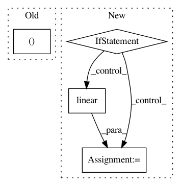

4c60119647c7c5347a6d31265c223137c7ddd896,lib/gan.py,,discriminator,#Any#Any#Any#Any#Any#Any#,54
Before Change
return class_logits, gan_logits
num_classes = config["y_dims"]+1
class_logits, gan_logits = build_logits(net, num_classes)
return [tf.slice(class_logits, [0, 0], [single_batch_size, num_classes-1]),
tf.slice(gan_logits, [0], [single_batch_size]),
tf.slice(class_logits, [single_batch_size, 0], [single_batch_size, num_classes-1]),
After Change
//net = linear(net, 1, scope="d_proj", stddev=0.03)
//net = batch_norm(batch_size, name="d_rp_bnend")(net)
if config["y_dims"] == 1:
net = linear(net, 1, scope="d_fc_end", stddev=0.003)
net = tf.reshape(net, [config["batch_size"]*2, 1])
class_logits = net
gan_logits = net
else:
num_classes = config["y_dims"]+1
net = linear(net, num_classes, scope="d_fc_end", stddev=0.003)
class_logits = tf.slice(net, [0,1], [single_batch_size*2,num_classes-1])
gan_logits = tf.squeeze(tf.slice(net, [0,0], [single_batch_size*2,1]))
return [tf.slice(class_logits, [0, 0], [single_batch_size, num_classes-1]),
tf.slice(gan_logits, [0], [single_batch_size]),
tf.slice(class_logits, [single_batch_size, 0], [single_batch_size, num_classes-1]),
tf.slice(gan_logits, [single_batch_size], [single_batch_size]),
In pattern: SUPERPATTERN
Frequency: 3
Non-data size: 4
Instances
Project Name: HyperGAN/HyperGAN
Commit Name: 4c60119647c7c5347a6d31265c223137c7ddd896
Time: 2016-12-17
Author: martyn@255bits.com
File Name: lib/gan.py
Class Name:
Method Name: discriminator
Project Name: NVIDIA/sentiment-discovery
Commit Name: 8030eeca74b6634f2a60168516573912aaa9cd65
Time: 2018-11-20
Author: raulp@nvidia.com
File Name: model/modeling.py
Class Name: BertForSequenceClassification
Method Name: forward
Project Name: NVIDIA/sentiment-discovery
Commit Name: ef87f1a071c6b8ca5607874a1a7d77d8a1ab2821
Time: 2018-11-19
Author: raulp@nvidia.com
File Name: model/sentiment_classifier.py
Class Name: SentimentClassifier
Method Name: forward